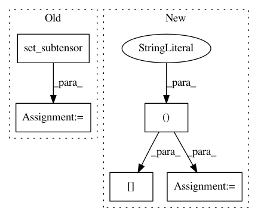

a744b600e94ae00fbec71ef493afdff48bc3816b,keras/layers/normalization.py,LRN2D,get_output,#LRN2D#Any#,97
Before Change
input_sqr = T.sqr(X)
extra_channels = T.alloc(0., b, ch + 2*half_n, r, c)
// TODO: use concatenate instead
input_sqr = T.set_subtensor(extra_channels[:, half_n:half_n+ch, :, :], input_sqr)
scale = self.k
for i in range(self.n):
scale += self.alpha * input_sqr[:, i:i+ch, :, :]
scale = scale ** self.beta
After Change
half_n = self.n // 2
input_sqr = K.square(X)
extra_channels = K.zeros((b, ch + 2*half_n, r, c))
input_sqr = K.concatenate([extra_channels[:, :half_n, :, :],
input_sqr,
extra_channels[:, half_n+ch:, :, :]],
axis=1)
scale = self.k
for i in range(self.n):
scale += self.alpha * input_sqr[:, i:i+ch, :, :]
scale = scale ** self.beta
In pattern: SUPERPATTERN
Frequency: 3
Non-data size: 5
Instances
Project Name: keras-team/keras
Commit Name: a744b600e94ae00fbec71ef493afdff48bc3816b
Time: 2015-11-18
Author: francois.chollet@gmail.com
File Name: keras/layers/normalization.py
Class Name: LRN2D
Method Name: get_output
Project Name: rodluger/starry
Commit Name: e99414f3ea4021ce2816b44b7db75f42bbb34b41
Time: 2019-06-01
Author: rodluger@gmail.com
File Name: starry/ops/ops.py
Class Name: OpsReflected
Method Name: X
Project Name: senarvi/theanolm
Commit Name: b7a5a410c527c3642d58aaba11d1aadc62bd918a
Time: 2016-11-24
Author: seppo.git@marjaniemi.com
File Name: theanolm/network/samplingoutputlayer.py
Class Name: SamplingOutputLayer
Method Name: _compute_sample_logprobs